lec05
Contents
lec05¶
202200218
Topics
Spectral function
(Thought) experiment on spectroscopy
The zoo of Green’s functions
Impurity-phonon coupling
Goals
developing intuition about Green’s and spectral functions
Appreciating how they relate to physical problems
Applying the techniques to a less trivial and physically relevant problem
Spectral function¶
Last time, we were considering a “one-particle” Green’s function in a general quantum many-body problem
where \(n\) labels the complete (but unknown) eigenstates of the Hamiltonian. We will continue analyzing how much information we can gain from considering such expressions. We would want to understand the excitation energies. However, in general it is hopeless to try to resolve each of the frequencies. Instead, we should think of a distribution of frequencies, and prominent features will be “peaks” with some widths. This can be done systematically by Fourier transform with respect to time \(t\)
But there’s a serious issue: the integrand is oscillating as we attempt to Fourier transform with \(t\to \pm\infty\). Clearly this is an artifact of our mathematical treatment: we don’t know if our universe existed or will exist all the way to \(t=\pm\infty\)!
Here, let us do two things to circumvent the problem
In our thought experiment, we always let the system evolve forward in time when we evaluate the auto-correlation. In other words, we restrict ourselves to \(t\geq 0\)
we won’t be able to access \(t\to +\infty\) anyway. Let’s “damp” the contribution by adding a convergence factor \(e^{-\eta t}\) to the integrand, taking \(\eta\to 0^+\)
Notes:
this explains the convention of attaching \((-i)\) to the definition of \(G_{\alpha\alpha}(t)\)
\(G_{\alpha\alpha}(\omega)\) as a function over \(\omega\) has a (dense) series of poles at \(\omega=\Delta E_n-i\eta\)
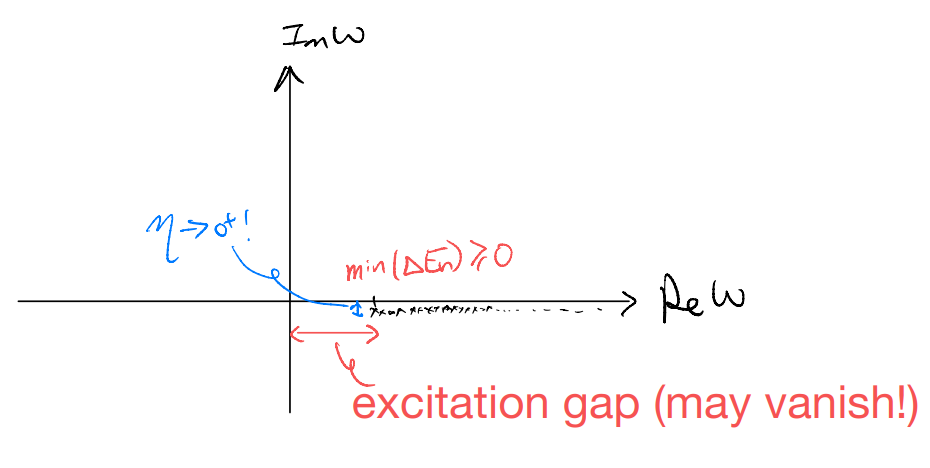
But this is still not something we can measure directly! The matrix element \(\left| \langle n|\hat{c}_{\alpha}^{\dagger}|\Omega \rangle \right|^2\) is physical: it corresponds to the transition probability of the ground state to some excited state when we add an electron to it. But energy information is hidden in the location of the poles which we displaced below the real line by a sleight of hand. We now claim that, in fact one can identify a “spectral function”, closely related to actual experiments, from the frequency-space Green’s function:
where \(\left| \langle n|\hat{c}_{\alpha}^{\dagger}|\Omega \rangle \right|^2\) is the matrix element and \(\delta \left( \omega -\Delta E_n \right)\) is the density of states. We will give a “lousy” derivation here first; will revisit later. Noticing
We will handle the real part later. The imaginary part looks like
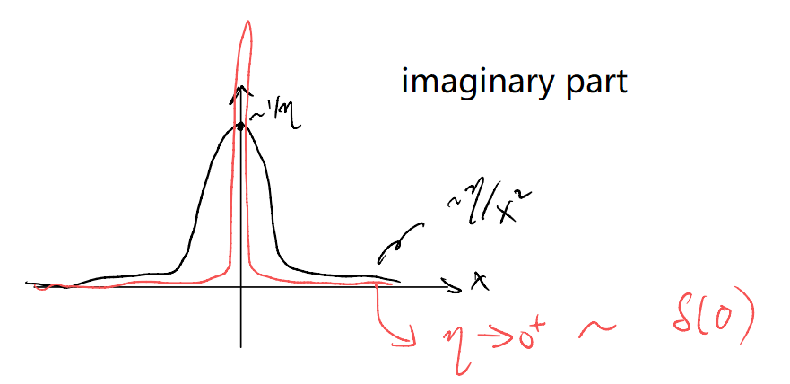
Normalization:
This gives
where \(\left| \langle n|\hat{c}_{\alpha}^{\dagger}|\Omega \rangle \right|^2\delta(\omega-\Delta E_n)\) is the probability of finding the system in the \(|n\rangle\) eigenstate when we add an electron \(\hat{c}_{\alpha}^{\dagger}\) to the ground state \(|\Omega\rangle\) with energy \(\omega\) matching \(\Delta E_n\). How can we measure a quantity like that?
STM: trying to add electrons to the sample (approx. in the ground state at low temperature)
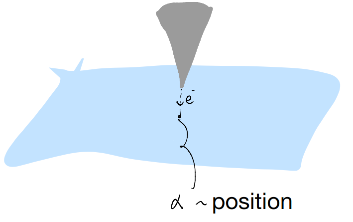
But STM doesn’t only try to add electrons! The tip also tries to “pull” electrons out of the sample, i.e., remove electron from the ground state, Similarly for ARPES
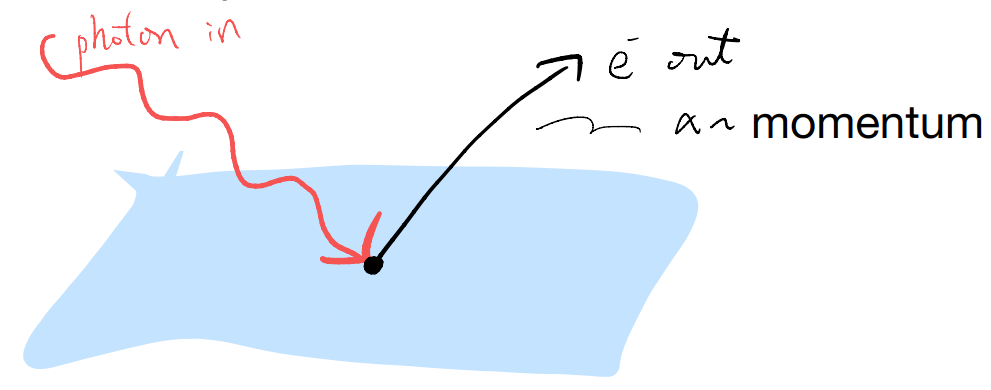
Clearly, there are many more things one can do. We are only starting to see the tip of the iceberg.
Ground state deduction: a thought experiment¶
Now, let’s imagine plotting this spectral function. First, let us revert to our simple “single-orbital” example
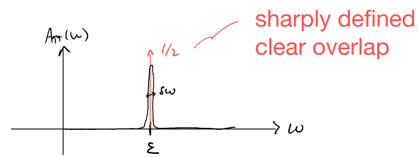
If this was an experimental result, how would we interpret it? There is a sharp “resonance” when we try to add an up electron with energy \(\varepsilon\) to the ground state. The overlap is \(\frac{1}{2}\). Suppose we can do similar experiments and measure \(A_{\downarrow\downarrow}(\omega)\), as well as those associated with electron electron removal
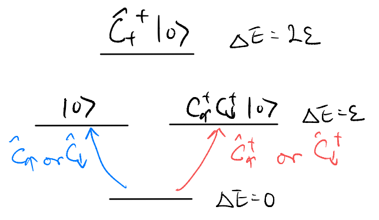
we will conclude:
Adding \(\hat{c}_{\uparrow}^{\dagger}\): sharp resonance with weight \(\frac{1}{2}\)
Adding \(\hat{c}_{\downarrow}^{\dagger}\): sharp resonance with weight \(\frac{1}{2}\)
Removing \(\hat{c}_{\uparrow}\): sharp resonance with weight \(\frac{1}{2}\)
Removing \(\hat{c}_{\downarrow}\): sharp resonance with weight \(\frac{1}{2}\)
Further, IF we know the relevant Hilbert space is one orbital with spin-\(\frac{1}{2}\) electrons, we can conclude
(conclusion-a) We can both add and remove electron from the ground state, it must have \(1\) electron
(conclusion-b) The one electron is in some half-half state between spins up and down (equal weights above)
i.e., we know the ground state up to an undetermined phase!
Notes:
We assumed above that we can choose to tunnel spin up versus down electrons independently. This is a kind of “resolution”, giving “spin-resolved” spectral function (e.g., spin-polarized STM tips). If we don’t have such spin resolution, we can only conclude (conclusion-a) but not (conclusion-b). More resolved means more knowledge
For such a “small” system, one can imagine cooking up fancier measurements to “better resolve” the system. That’s in the spirit of quantum tomography. We don’t usually have the luxury of such measurement capability in many-body quantum systems so we won’t go further down there.
Let us next imagine plotting the spectral function for a general interacting many-body Hamiltonian
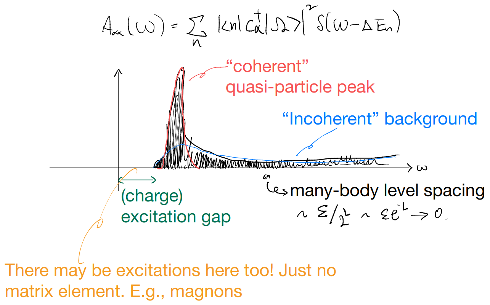
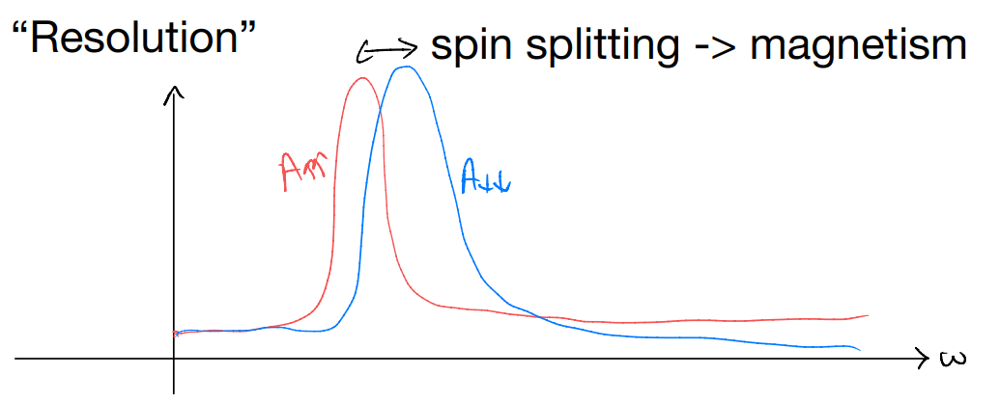
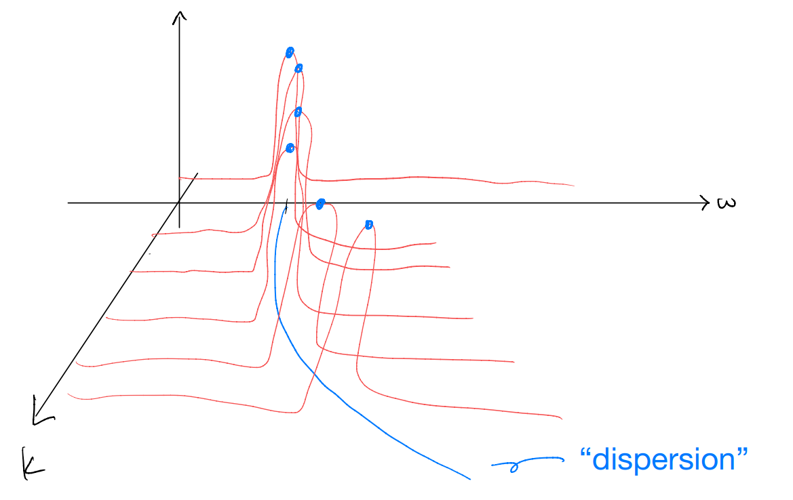
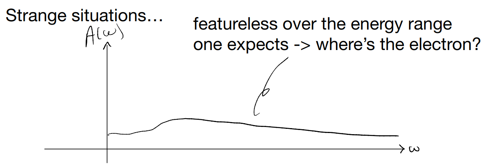
Strange situations: featureless over the energy range. If such a spectrum is observed, it suggests either
the excitations cannot be understood as quasi-particles
quasi-particles exist, but they have poor overlap with the physical electrons
Either will be very interesting! But beyond our scope…
A peek of the iceberg¶
In the above, we chose in an ad hoc manner to consider the real-time Green’s function
Since our ground state will have a some finite density of electrons to start with, it will be equally natural to consider, e.g.,
which contains information about electron removal from \(|\Omega\rangle\).
In addition, we don’t necessarily have to commit to the “diagonal” form with matched indices. E.g., if \(\alpha\) denotes spatial indices, it would be natural to consider
Our commitment above on \(t>0\) is also a bit ad hoc anyway. We should be free ask what happens if we compute “negative time” correlation function, at least as a theoretical gadget. Also, why not do something more than single electron addition (removal)? E.g.,
These discussions suggest that there is a huge zoo of possible “Green’s functionS” to consider, and we need a way to organize them, e.g., fix some ordering on the time of “insertions”, etc.
Such generalized Green’s functions appear under different considerations, and we may want to give them different names, Nevertheless, they are all variations on the same tune, much like Schubert’s trout quintet! More later…
Impurity phonon coupling¶
So far, we have discussed
QHO: coherent states, displacement operator,…
Free phonons: collection of decoupled QHOs
Localized electrons: a primer into “spectroscopy”
Let us now integrate all these into one single problem: how could we use electrons to probe phonons?
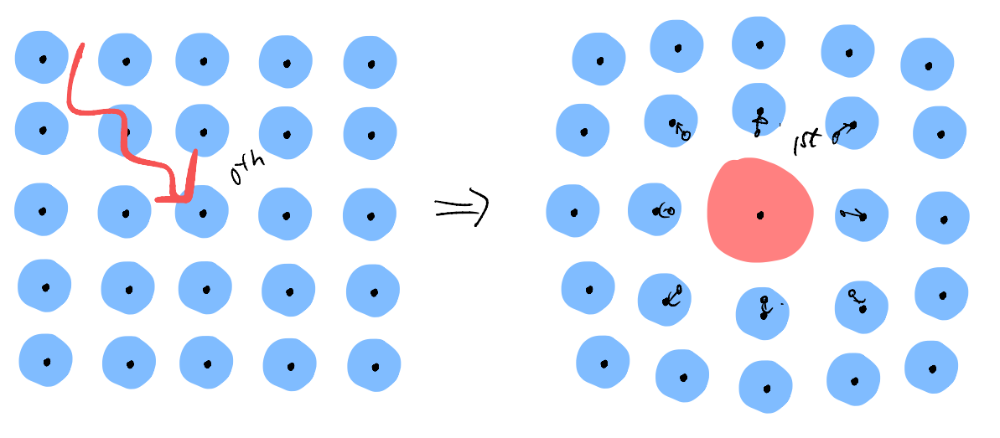
Similar to before, let us consider a single-site electronic problem:
let us interpret the index \(i\) as labeling some relevant orbitals \(s,p,d,\cdots\) and for concreteness we suppose there are \(N\) relevant orbitals in our problem. We also consider the free phonon Hamiltonian
where we have dropped the zero-point energy for simplicity, and take a single branch with uniform masses.
Let us suppose the electronic Hamiltonian describes the electronic states of an impurity located at the origin. The size and shape of the electron cloud surrounding our impurity depends in general on the orbital index \(i\). This, in turn, affect the equilibrium position of the neighboring atoms, e.g., a “fatter” electron cloud will push the neighboring atoms further away. We claim this coupling can be modelled as
We will see why in the next class.